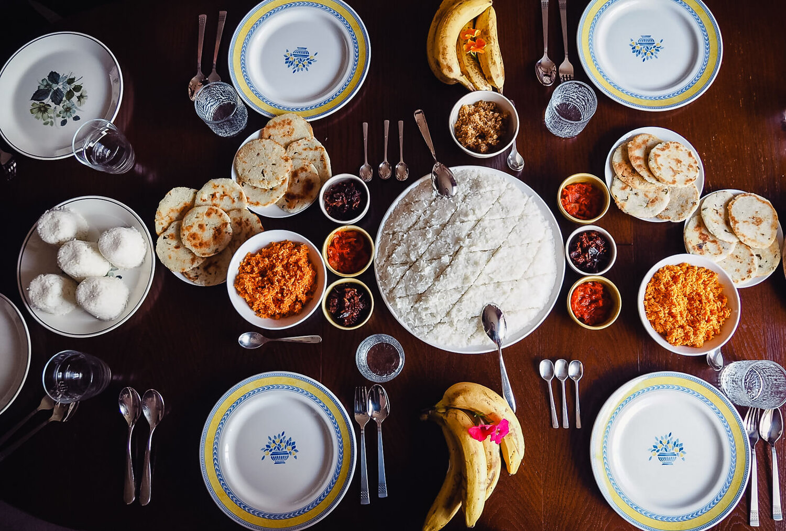
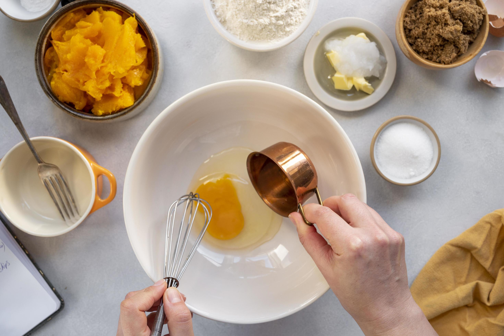
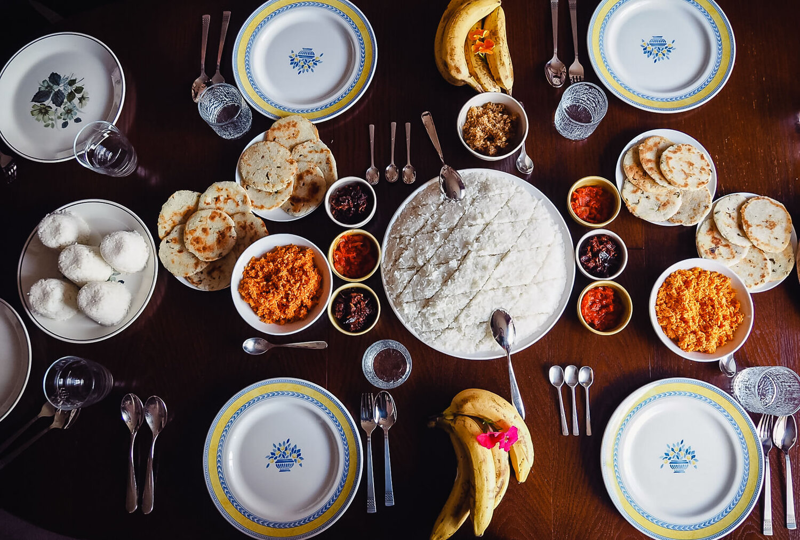
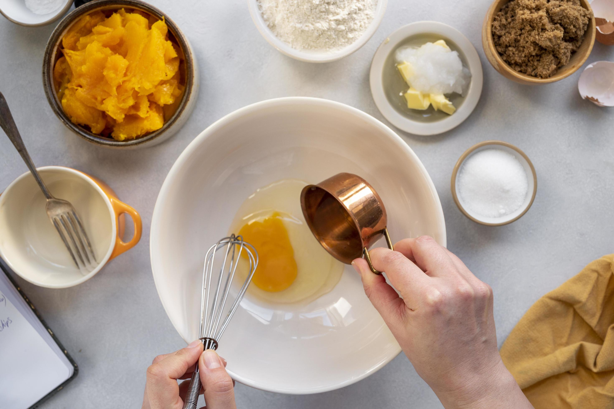

Indulge in a culinary adventure with our diverse collection of mouthwatering recipes from around the globe. From delectable desserts to savory mains, we've got something for every taste bud.
 



Explore Our Features.
Join Us on a Flavorful Journey!
Get ready to explore, experiment, and savor delightful dishes that will elevate your home cooking experience!
E-mail: e2245453@bit.uom.lk
Phone: +94 770395922
Address: Mapalana, Kamburupitiya, Matara.